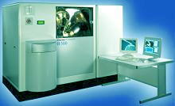

Electron Spectroscopy for Chemical Analysis (ESCA) or
X-Ray
Photoelectron Spectroscopy (XPS)
Electron Spectroscopy for Chemical Analysis (ESCA) or
X-ray
Photoelectron Spectroscopy (XPS) is a failure analysis technique primarily used in
the identification of compounds on the surface of a sample.
It
utilizes X-Rays with low energy (typically 1-2 keV) to knock off
photoelectrons from atoms of the sample through the photoelectric effect.
The energy content of these ejected electrons are then analyzed by a
spectrometer to identify the elements where they came from.
The incident
X-Rays used in knocking off the electrons must possess energy that is both
monochromatic and of accurately known magnitude. The X-ray source
material must also be a light element since X-ray line widths, which must
be as narrow as possible in ESCA, are proportional to the atomic number of
the source material. It is for these reasons that commercial XPS systems
typically use the K-alpha X-rays of aluminum (Al K-alpha E = 1.487 keV)
and magnesium (Mg K-alpha E = 1.254 keV).
Although the X-rays penetrate deep into the sample, only the
electrons on the surface of the sample are able to escape without
significant loss of energy for analysis. As such, ESCA, just like
AES, is
basically a surface analysis technique.
ESCA, in fact,
is similar to AES in many other ways. The ejected electrons are detected
in ESCA in the same manner as in AES, i.e., using a cylindrical mirror
analyzer (CMA) detector. ESCA scans also provide more or less the
same information as AES. They also have a common weakness - their
inability to detect hydrogen (H). ESCA's spatial resolution,
however, is poor compared to AES, because X-ray beam diameter is more
difficult to make smaller (limit is about 150 microns) than that of
electron beams.

Figure 1.
Example of an ESCA Equipment from
Thermo Electron Corp.
ESCA, however,
does offer some advantages over AES, which is why ESCA is a good
complementary technique to AES. For instance, the electron
bombardment given by AES is destructive to some materials, but these same
materials are left undisturbed by ESCA's X-Ray bombardment. Electron
bombardment also tends to 'charge up' insulative specimens, preventing
good analysis. Charging up is never a problem for ESCA's 'neutral'
X-rays.
ESCA's resolving
power for energy (typically at 0.5 eV) is also better than that of AES.
Because of ESCA's good energy resolution, it can detect shifts in the
binding energy of atoms in a molecular structure with different chemical
bonds. This enables ESCA to provide information not only on elemental
composition, but on chemical bonding as well.
In the
semiconductor industry, ESCA serves as a useful surface analysis tool for
studying organics, polymers, and oxides. It also played a major role
in the development of plasma etching techniques. ESCA is also a good
FA technique for resolving issues related to oxidation, metal
interdiffusion, and resin-to-metal adhesion.
See Also:
Failure
Analysis; All
FA Techniques; EDX/WDX Analysis;
SIMS/LIMS;
Auger Analysis;
Chromatography;
FA Lab
Equipment; Basic FA
Flows;
Package Failures; Die
Failures
HOME
Copyright
©
2001-Present
www.EESemi.com.
All Rights Reserved.